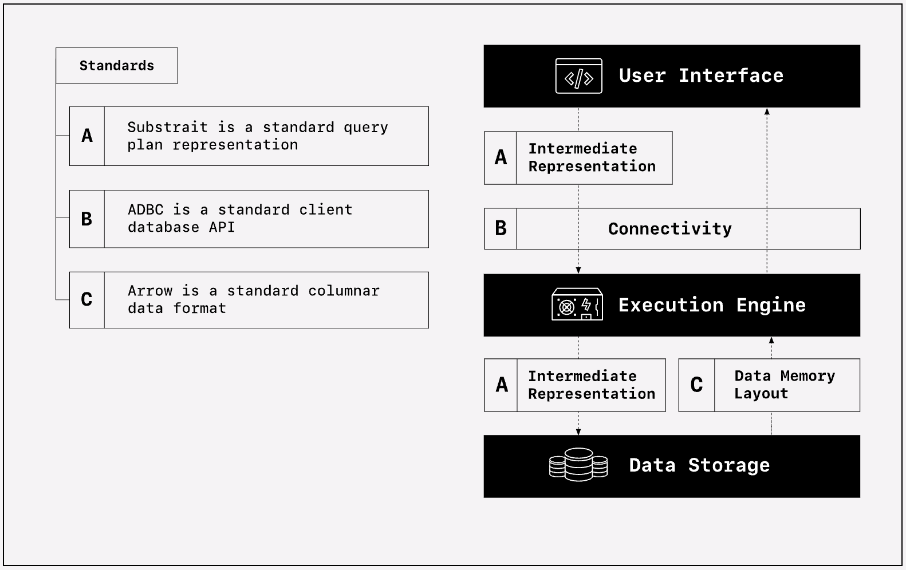

Composable data ecosystem
Ibis exists in a broader composable data ecosystem. The Composable Codex by Voltron Data is the result of years of experience and hours of writing by experts in the field, providing an in-depth introduction the composable data systems. We’ll take a look at:
and how they fit in with Ibis.
Overview
Ibis is the portable Python dataframe API, supporting many backends. This is achieved by decoupling the API from the execution engine. While Ibis already relies on standards like Apache Arrow today, we expect the composable data ecosystem to mature and broader adoption of adjacent projects going forward. This will allow Ibis to simplify its implementation and improve performance for backends that support these standards.
The first chapter of The Composable Codex provides a great overview of where these projects fit in:

And a table explaining the standards:
| Label | Types of standards | Standards |
|---|---|---|
| A | Intermediate representation | Substrait allows any user-interface that produces Substrait to pass the compute operations to a Substrait-consuming execution engine. You could swap any Substrait compatible user interfaces or execution engine. |
| B | Connectivity | Arrow Database Connectivity (ADBC) ensures that no matter where the computation is performed the data will be returned in the Arrow format. You can swap your execution engine and know that your downstream code will still work. |
| C | Data memory layout | The Apache Arrow in-memory data format ensures that the data can pass from the storage to the engine (and even across the systems in a distributed environment) and back to the user without slowing down to serialize and deserialize. |
History
The composable data ecosystem has been envisioned for some time. Wes McKinney has been instrumental in the development of the composable data ecosystem, co-founding Voltron Data, Apache Arrow, and initially creating Ibis. Wes looked back on 15 years on the road to composable data systems and gave some motivation for Ibis in his infamous “Apache Arrow and the ‘10 Things I Hate About pandas’”.
Ibis started as a pandas-like API for Apache Impala, but has since expanded to support many backends. It currently leverages open-source projects like SQLAlchemy and SQLGlot to work with many backends. While these projects are great, they rely on backend-specific SQL that does not constitute a standard. Going forward, we expect ADBC and Substrait to be the standards for connectivity and intermediate representation, respectively.
Apache Arrow
Ibis uses Apache Arrow to provide a common data format for data interchange between Ibis and backends. Many backends also use Apache Arrows as their in-memory data format.
Dataframe interchange protocol
Ibis supports the dataframe interchange protocol for data interchange between with other Python dataframe libraries and visualization libraries. This is largely efficient because most libraries support Apache Arrow as their in-memory data format, making interchange between them cheap and efficient.
Apache Arrow Database Connectivity (ADBC)
Apache Arrow Database Connectivity (ADBC) is a relatively new standard for database connectivity. It is an API for exchanging data between a client and a database. It is a successor to ODBC and JDBC, and is designed to be a more modern and performant alternative to these standards.
While Ibis does not currently use ADBC for its backends, as the project matures we expect an increase in performance and a decrease in complexity for backends that support ADBC.
Substrait
Substrait is a relatively new standard for cross-language serialization of relational algebra. It is intended as an intermediary representation between the user interface and other points in the data system. Ibis can already compile expressions to Substrait which can then be executed by Substrait-consuming backends. Support today is limited but, like ADBC, we expect the project to mature and for Ibis to leverage it more in the future.
Why not SQL?
Structured Query Language (SQL) is not a standard. There is a commonly referenced ANSI Standard for SQL that you can pay a lot of money to access and most execution engines claim to support. However, most execution engines extend or subtly deviate from the standard and in practice it is not possible to simply reuse SQL from one execution engine on another. This leads to notoriously difficult database migrations and vendor lock-in.
Why Substrait?
Substrait, unlike SQL, is not intended as a user interface. Instead, a user interface like Ibis in Python or dplyr in R would compile to Substrait and pass it to a Substrait-consuming execution engine. This allows the user interface to be decoupled from the execution engine, allowing for more flexibility and portability.
Going forward
Going forward, Ibis intends to leverage other standards in the broader composable data ecosystem to simplify its implementation and improve performance.